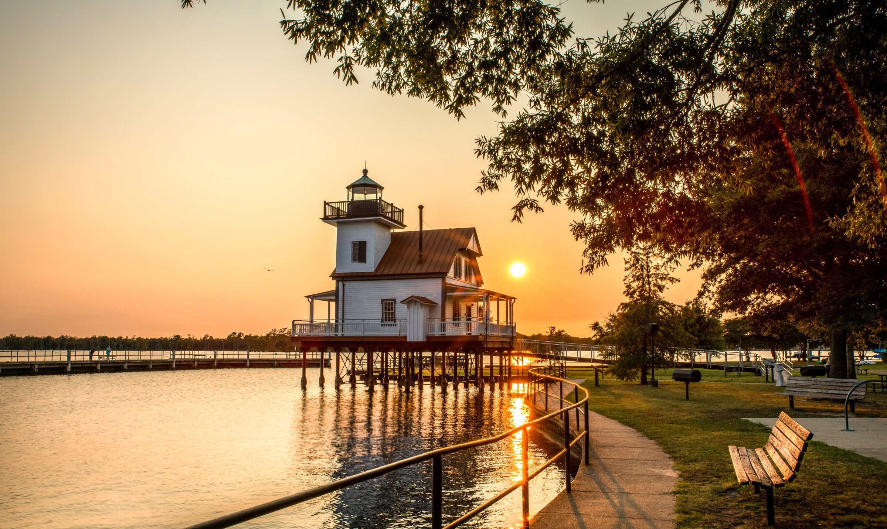
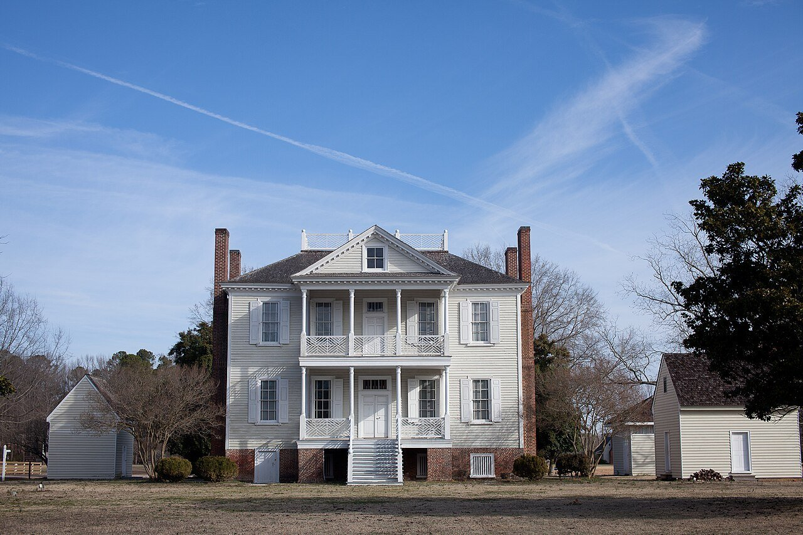
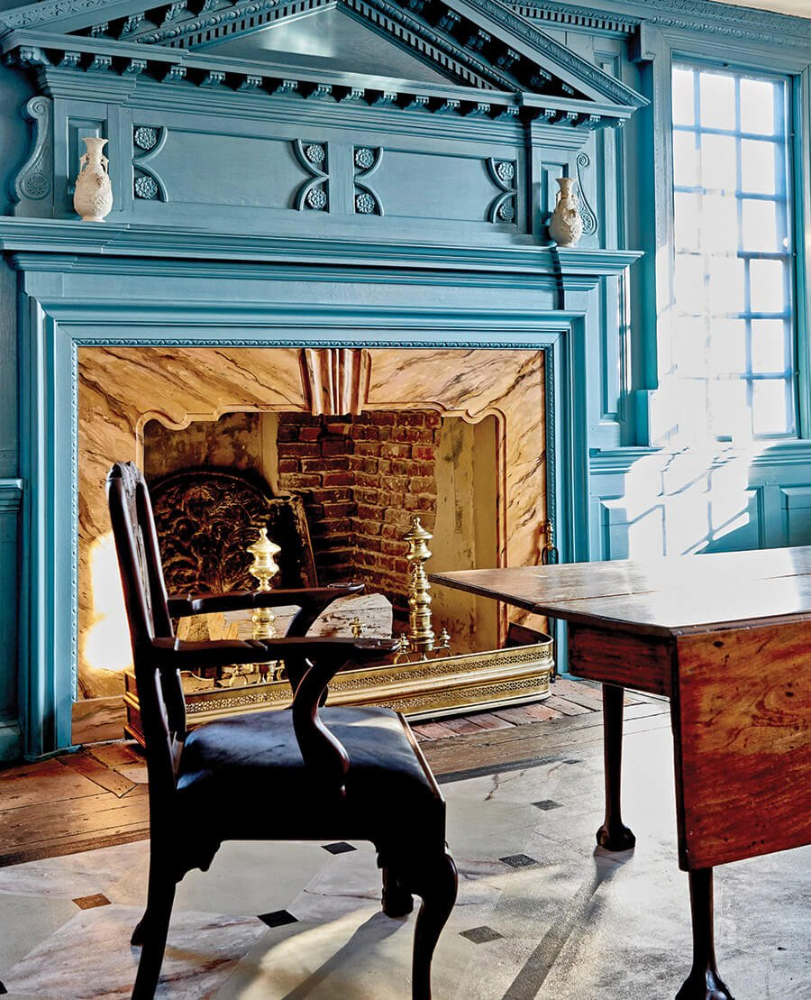

Honeymoon · 4 days · for Aaron
Edenton, Nov 12–15, 2026
A honeymoon weekend for Aaron & Kimberly in North Carolina's colonial capital.
The 1886 Roanoke River Lighthouse at sunset
Thu Nov 12 – Sun Nov 15, 2026
One canopy-bed suite, four days, everything walkable.
Stay Booked
- Inner Banks Inn, Suite #21 Queen Anne (canopy bed)
- 103 E Albemarle St, Edenton NC 27932 · (252) 482-3641
- Confirmation E76WV977
- $401.74 due at the inn ($401.75 deposit paid; total $803.49)
- Welcome treat confirmed by the front desk (Nov 4): the Signature Stay includes breakfast plus water and cookies in the room on check-in day. No flowers or alcohol included; lilies are a paid add-on and not ordered.
Times
- Check-in 3–7 PM; early or late arrival by prior notice
- Checkout 11 AM
- Breakfast included daily, 7:30–9:15 AM
Weather
Bring layers for sunset.
- Typically mid-60s °F by day, mid-40s at night
- Breezy off the Albemarle Sound
- Sunset about 5:00 PM
Dining notes
- No alcohol: ask servers for zero-proof drinks. No restaurant publishes a mocktail menu.
- Kimberly eats no seafood; non-seafood picks are noted at each stop.
Mansions, sunsets and slow breakfasts, day by day.
Pick a day. Every stop shows its booking status and a map link.
Arrive & first sunset
Thursday, November 12
-
12:30 PM
Arrive downtown Edenton, about 1 hr 50 min from Rocky Mount. Park near the inn.
-
1:00 PM
Lunch at Downtown Roots: farm-to-table sandwiches and salads. Thu 11 AM–6 PM.
Walk-in
-
2:30 PM
Vintage trolley tour of the historic district 55 min $12.50 each 22 seats max
Departs the Penelope Barker House Welcome Center (open Thu 10–4; closed Tuesdays). Tours at 10:30, 11:30, 1:30 and 2:30, weather permitting. Requested by email Nov 4, not confirmed: reserve by phone only at (252) 482-7800; advance reservations are highly encouraged. Thursday is safer than Saturday, when private rentals take the trolley.
Requested, call to confirm
-
3:30 PM
Check in to the Queen Anne Suite, Inner Banks Inn.
Booked
-
4:30 PM
Sunset walk along the waterfront to the 1886 Roanoke River Lighthouse. The sun sets around 5:00.
Walk-in
-
6:30 PM
Dinner at Carrozza, cozy Italian, a 3-minute walk. Thu 4–8 PM. Pasta $15–27 Chicken parm $33
Skip dishes braised in red wine (pot roast, short rib), or ask.
Booked Nov 4 by phone with Destiny: party of 2 under Aaron Pait. She noted one guest doesn't eat seafood and took Aaron's number. Carrozza doesn't issue confirmation numbers. 206 S Broad St, Edenton · (252) 415-0022.
Booked
Mansions & the big dinner
Friday, November 13
-
8:00 AM
Three-course breakfast at the inn.
Booked
-
9:15 AM
Drive to Windsor, about 40 min.
-
10:00 AM
Historic Hope Plantation: David Stone's 1803 Federal-style governor's mansion, with original furnishings. 2-hr guided tour, 10 AM–12 PM $33.90 paid for 2
Booked: "Historic Tours" ticket, Fri Nov 13, 2026, 10:00 AM–12:00 PM, 2 adults. FareHarbor Booking #389980799. Paid $33.90 total on Nov 5, 2026 (Link 1319); shows on the statement as "FH* Historic Hope". For changes, call (252) 794-3140.
FareHarbor confirmation received Nov 5. Docents are short, but Hope will warn you in advance if the tour can't run. Military rate request still unanswered.

Booked
-
12:15 PM
Lunch at Rachel's Bakery & Cafe, Windsor. Fri 7:30 AM–3:30 PM.
Walk-in
-
1:15 PM
Drive back to Edenton.
-
2:30 PM
Cupola House (1758), the finest colonial interior in town. 45 min $12.50 each
Tours Fri 11:30, 12:30 and 2:30. Buy tickets at the Barker House, or call.

Needs booking
-
4:00 PM
Borrow the inn's bikes and ride the waterfront for sunset (around 5:00).
Option: a tandem kayak from the town harbor, $7/hr; call ahead.
Walk-in
-
5:30 PM
Chowan Arts Council artist reception for Chet McAteer, 5:30–7, a two-minute walk from the inn. Free.
Walk-in
-
7:00 PM
Dinner at The Herringbone, Dining Room. Party of 2 ≈ $90–110 for two
Booked Nov 4 via Toast; no card, deposit or fee. Confirmation texted to (252) 904-7163. 119 W Water St, Edenton, NC 27932 · (252) 368-1068. To cancel, call that number as soon as possible.
Booking notes: honeymoon, quiet or window table, no seafood for Kimberly, no alcohol. Menu
The Table at the inn isn't open (front desk, Nov 4).
Booked
Old Edenton & Christmas Open House
Saturday, November 14
-
8:00 AM
Breakfast at the inn.
Booked
-
9:00 AM
Edenton Farmers Market, 200 N Broad St, 9 AM–1 PM. Free.
Walk-in
-
10:00 AM
Main Street Edenton Christmas Open House, 10 AM–5 PM downtown. Antique hunting for Kimberly:
Walk-in
-
11:30 AM
Historic Edenton docent tours: the 1767 Chowan County Courthouse (oldest colonial courthouse still in use, with its upstairs ballroom), the Roanoke River Lighthouse interior and the Iredell House. About $5 + tax per adult
Ask about the veteran/military rate (about $4). Start at the Barker House Welcome Center; confirm November tour times at (252) 632-5020.
Needs booking
-
1:00 PM
Lunch at Downtown Roots (Sat 11–6), or coffee at Edenton Coffee House (Sat 7–5).
Walk-in
-
2:30 PM
Downtime at the suite, the ideal slot for the in-room couples massage.
Booked
-
4:15 PM
Golden-hour couples photo session at the lighthouse, an optional special touch.
Needs booking
-
6:00 PM
Dinner at Waterman's Grill; arrive around 6 for the candlelit upstairs room. ≈ $75–95 for two
Walk-in only, no reservations; call (252) 482-7733 and they'll try to fit you in. 427 S Broad St, Edenton, NC. Fri–Sat 5–9:30 PM, closed Sunday.
Mostly seafood. Non-seafood from the 2023 menu (prices may be higher now): NY strip or ribeye $32.99, smothered chicken $21.99, hamburger steak $21.99, cheese tortellini with chicken $25.99. Full bar: ask for a mocktail or Clausthaler NA beer.
Walk-in, not booked
Swap option: Somerset Place and Lake Phelps
Somerset Place State Historic Site, Creswell, about 45 min away: Sat 9–5, tours $5 + tax, last tour by 3:30. The main Collins House is closed for construction. Add Pettigrew State Park's cypress boardwalks and wintering tundra swans on Lake Phelps, with lunch at Black Dirt Coffee Shop & Café in Columbia (Sat 6 AM–5 PM).
Slow morning, home
Sunday, November 15
-
8:30 AM
Breakfast at the inn, or sleep in and skip to brunch.
Booked
-
11:00 AM
Check out.
Booked
-
11:15 AM
Brunch at The Herringbone, 119 W. Water St. Brunch 10 AM–3:30 PM Dinner 4–7 PM
Sunday hours confirmed by Mike Bonander by email, Nov 5.
-
On the way out
Coffee for the road at The Kraken Coffeehouse, Sun 8 AM–7 PM.
Walk-in
Most historic sites, Cupola House and Edenton Coffee House are closed Sunday. The trolley does run Sunday, at a reduced $10 per person with no docent on board.
Three calls lock in the weekend.
0 of 3 done. Tick each one off as you go.
- Trolley tour, Thu Nov 12, 2:30 PM Emailed Nov 4, not confirmed. Phone only: (252) 482-7800Call to confirm
- Cupola House, Fri Nov 13, 2:30 PM Tickets at the Barker HouseTo book
- Historic Edenton docent tours, Sat Nov 14 Confirm times at (252) 632-5020To book
Ticks live in this page only and reset when it reloads.
Add a special touch.
Estimated trip total: $1,107.64. Book each through the inn unless noted.
- In-room couples massage 60 min at the inn, $200 + 20% tip. Saturday's 2:30 PM downtime fits.Not added$240
- Golden-hour photo session Pierces Point Photography, 20 min, 12 edited photos, $175 + tax. Sat 4:15 PM at the lighthouse.Not added≈ $190
- Picnic basket for two With non-alcoholic drinks; 72 hours' notice. Eat on the waterfront by the lighthouse.Not added$85
- Chocolate-covered strawberries Waiting in the roomNot added$40
- Non-alcoholic bubbly From the innNot added$30
About $1,108 for two, before extras.
A conservative estimate. Dinner figures are estimates; Friday and Saturday dinners are before tip.
- Inn balance Due at the inn
- $401.74
- Tours Trolley $25, Hope $33.90 (paid), Cupola $25, docent tours ~$12
- $95.90
- Dinners Estimates: Carrozza ~$110; The Herringbone Fri ~$90–110 and Waterman's Grill Sat ~$75–95 for two, before tip. Counted at the high end.
- $315
- Lunches and brunch ~$45 × 3, plus Sunday brunch ~$75
- $210
- Coffee and treats
- $40
- Gas
- $45
- Special touches None added yet; all five come to $585
- $0
- Estimated total
- $1,107.64
Core estimate ≈ $1,107.64 including the inn balance and the $33.90 already paid for Hope Plantation. The $401.75 deposit is already paid.
A few things are closed that weekend.
Closed
- Edenton Bay sunset cruises, back April 2027
- Newbold-White House, season ended Oct 31
- Huckleberry's Ice Cream, permanently closed
- 309 Bistro, closed March 2026
- Christmas Candlelight Tour is Dec 11–12, after the trip
Still to confirm
Hours verified on Google Maps Nov 2, 2026; The Herringbone's Sunday hours confirmed by email Nov 5. Hope Plantation's military rate is unanswered. Tour times for Historic Edenton still need a phone call.
Sharing
This page is private to Aaron by default and can be made shareable. It shows the inn's name, so hold off until the surprise is out.